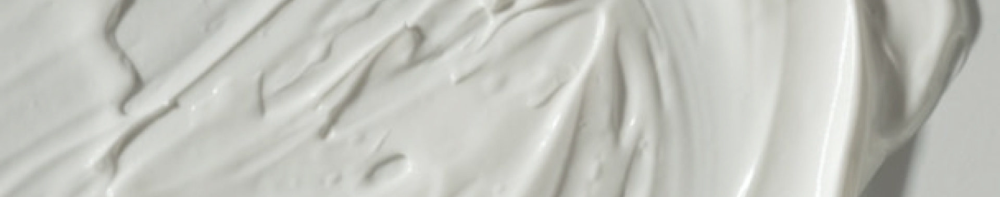
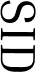
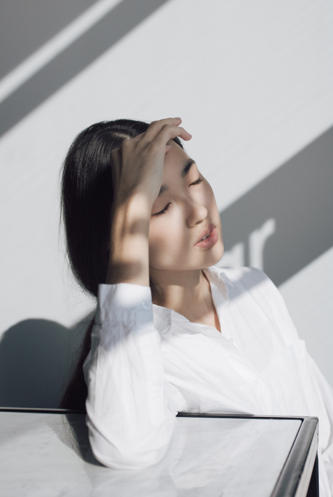
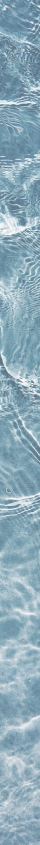
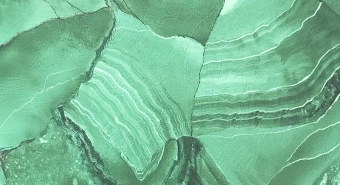

ABOUT SIDMOOL
피부의 고향
시드물
다름의 차이를 만들다.





시리고 맑은 물, 시드물
태초의 피부로 돌아가는 힘
고향에 온 것 같은 편안함
처음으로 차오르는 피부의 힘
단순히 이익을 추구하는 것이 목표가 아닌
함께하는 소통과 정을 나누는 것
여러분들의 피부고민을 해결하기 위해
쉼없이 공부하며 좋은 화장품을 개발하겠습니다.
SIDMOOL ECO PHILOSOPHY
"시드물은 고객만족을 최우선으로 생각합니다"
시드물은 동물을 사랑합니다.
시드물은 동물을 사랑하고, 동물과 인간에게 유해하고 위험한 성분을 사용하지 않습니다.
천연 식물성분
천연 성분을 활용하여 심미적 아름다움은 물론 피부 속 생명력을 되찾을 수 있는 방법을 연구합니다.
천연 보존 시스템
화학방부제의 사용을 최소화하고 대부분의 제품에 식물추출물을 이용해
안정화 시스템을 적용하고 있습니다.
자연주의 뷰티 브랜드
시드물은 환경을 사랑하며, '사람은 자연보호 자연은 사람보호'라는 문구를 제품에 표기하여
시드물을 사용하는 사람들과 함께 자연보호를 실천합니다.